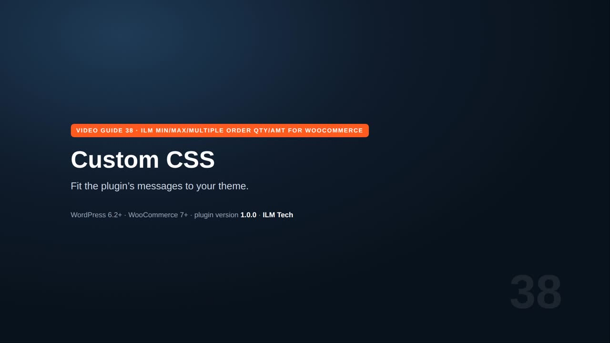
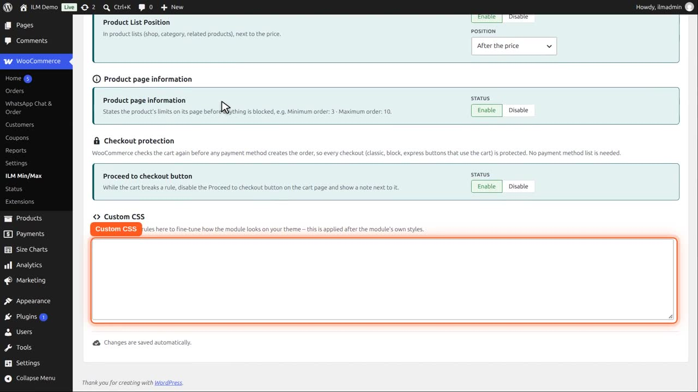
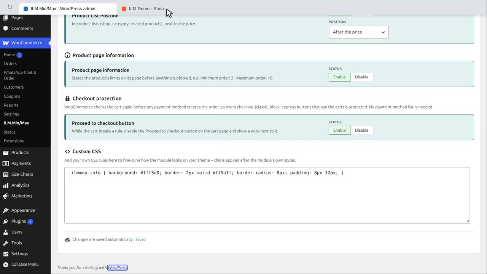

Pro add-on. This feature needs the Pro add-on. See Free and Pro.
This is the product page information line in its default look.

On Configuration, Advanced, the Custom CSS box takes your own CSS. It is loaded after the plugin’s own styles.

For example, give the information line an orange background and a border.

The product page now shows it in your style.